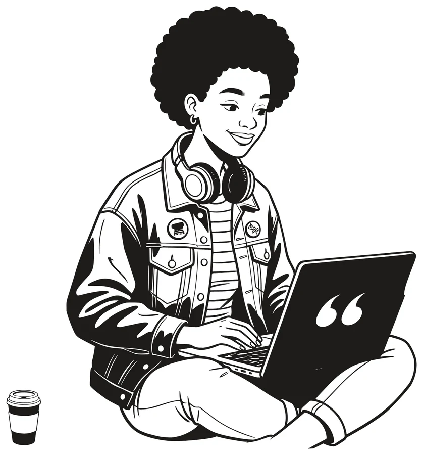

How Open Journalist is built, what we learn along the way, and where it goes next.
At the AI for Media Hackathon 2026, Open Journalist went from a stack of design documents to an application that checks a claim against 60,000 rows of data, drafts a radio piece and refuses to export until a person has signed off.
